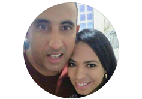

Meu nome é Fábio Augusto, sou recém-graduado em Bacharel em TI pela UNIVESP,
para que fique apto a atuar no mercado de trabalho estou retomando os estudos práticos desde o começo, para reforçar os estudos da faculdade.
@fabioaugustot - Me acompanhe lá no X
Fábio Augusto Teixeira - Confere também o meu linkedin
Fábio Teixeira - Visita meu facebook
Fábio Teixeira - Confere também o Instagram
F-dev-web - Não se esqueça do Github
@fabioaugustoteixeira8044 - Se inscreve no meu canal do you tube